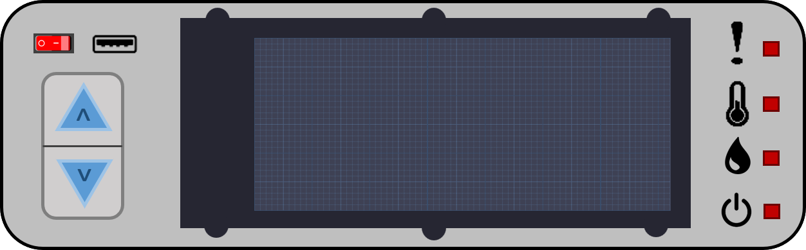

Korisničke upute
Dobro došli u korisnički priručnik za HiPo. Ovaj priručnik je namijenjen korisnicima svih razina iskustva, od početnika do iskusnih korisnika.
Instalacija
- Postavite HiPo sustav na ravnu površinu.
- Priključite sustav u struju.
- Napunite posudu za vodu do označene linije.
- Stavite sjemenje u mrežice za uzgoj.
- Po želji povežite sustav na WiFi mrežu.
Upotreba
- Pritisnite On/Off tipku kako biste uključili ili ugasili sustav.
- S pomoću tipki strelice gore i dolje postavite parametre na željene vrijednosti.
-
Provjerite lampice upozorenja:
- Prva lampica označava općenite greške te detaljno objašnjenje se prikazuje na zaslonu.
- Druga lampica upozorava na previsoku temperaturu prostorije iznad 45 °C.
- Treća lampica obavještava da je posuda za unos vode prazna.
- Posljednja lampica signalizira probleme s napajanjem i/ili nesiguran izvor struje.
- Uživajte u promatranju rasta biljaka!
Održavanje
- Redovito čistite posude za vodu i otpadnu vodu.
- Provjeravajte stanje biljaka i uklanjajte nepravilnosti.
Sigurnosne napomene
- Ne dirajte električne dijelove sustava mokrim rukama.
- Ne dopustite djeci da se upravljaju HiPo sustavom bez nadzora.

| Hrvatski naziv | Latinski naziv | Kiselost (pH) | Temperatura klijanja | Količina vode (L) |
|---|---|---|---|---|
| Cikla | Beta vulgaris | 6 | 22 °C | 5 L |
| Kupus | Brassica oleracea | 7 | 20°C | 10 L |
| Krastavac | Cucumis sativus | 5 | 24°C | 12 L |
| Patliđan | Solanum melongena | 6 | 26°C | 10 L |
| Paprika | Capsicum annuum | 6 | 24°C | 10 L |
| Rajčica | Solanum lycopersicum | 6 | 24°C | 12 L |
| Tikva | Cucurbita pepo | 5 | 26°C | 14 L |
| Zelena salata | Lactuca sativa | 6 | 20°C | 2 L |